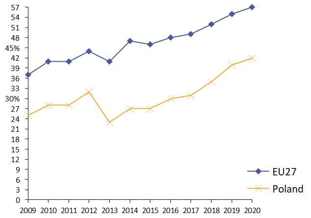
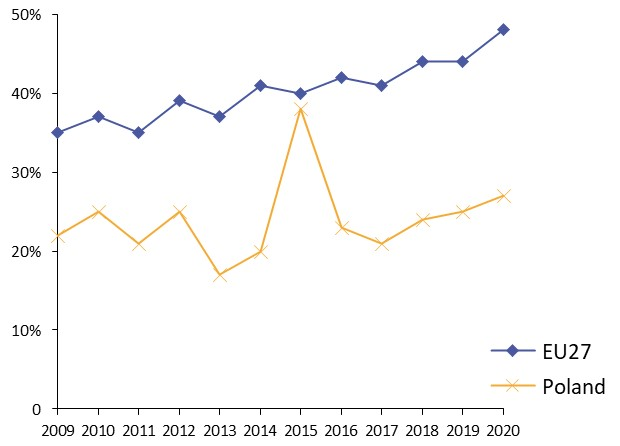
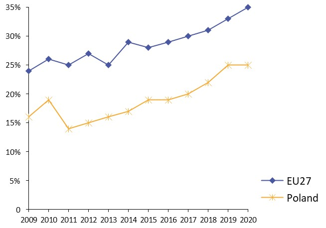
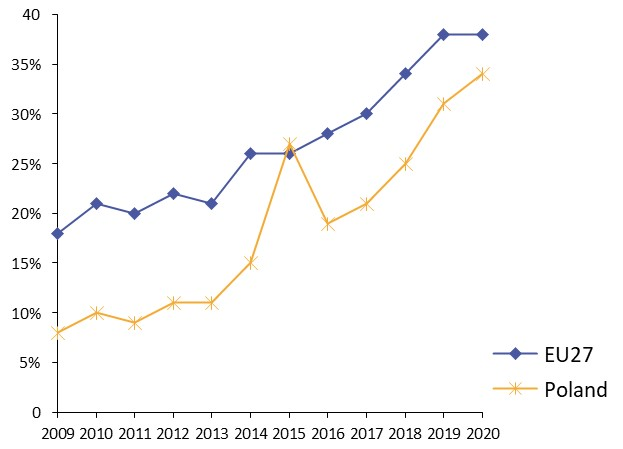
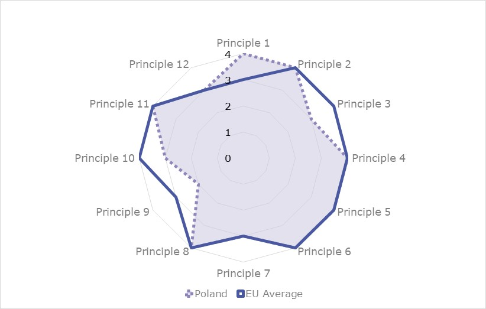
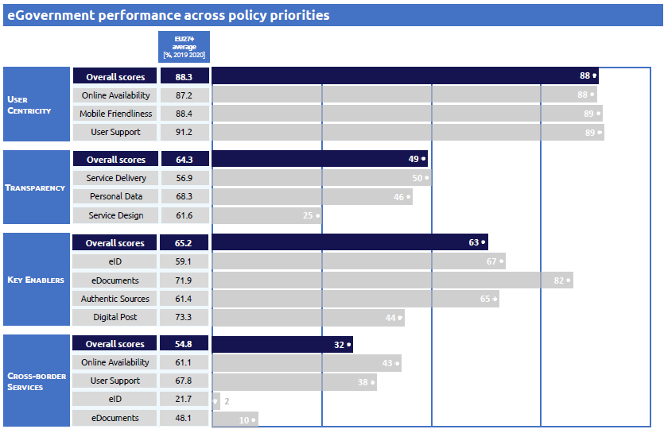
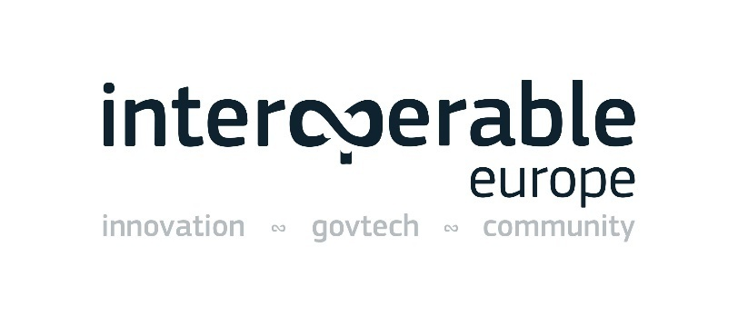
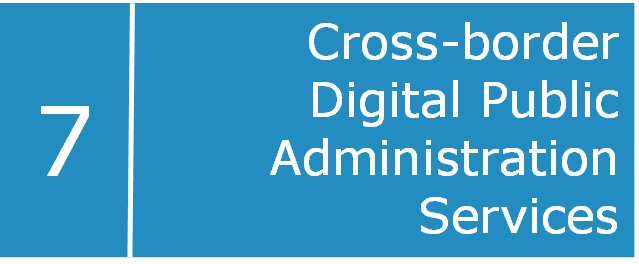

ISA2
Digital Public Administration factsheet 2021
Poland

2 Digital Public Administration Highlights 10
3 Digital Public Administration Political Communications 12
4 Digital Public Administration Legislation 21
5 Digital Public Administration Governance 31
6 Digital Public Administration Infrastructure 36
7 Cross-border Digital Public Administration Services 45
Please note that the data collection exercise for the update of the 2021 edition of the Digital Public Administration factsheets took place between March and June 2021. Therefore, the information contained in this document reflects this specific timeframe.

Country
Profile
1
Population: 37 899 070 inhabitants
GDP at market prices: 523 038.3 million euros
GDP per inhabitant in PPS (Purchasing Power Standard EU 27=100): 76
GDP growth rate: -2.7%
Inflation rate: 3.7%
Unemployment rate: 3.2%
General government gross debt (Percentage of GDP): 57.5
General government deficit/surplus (Percentage of GDP): -7.0
Area: 312 682 km²
Capital city: Warsaw
Official EU language: Polish
Currency: Polish Zloty (PLN)
Source: Eurostat (last update: 09 July 2021)
The following graphs present data for the latest Digital Public Administration Indicators for Poland compared to the EU average. Statistical indicators in this section reflect those of Eurostat at the time the factsheet is being prepared.
Percentage of individuals using the internet for interacting with public authorities in Poland  | Percentage of individuals using the internet for obtaining information from public authorities in Poland  |
Percentage of individuals using the internet for downloading official forms from public authorities in Poland | Percentage of individuals using the internet for sending filled forms to public authorities in Poland |
|  |  |
In 2017, the European Commission published the European Interoperability Framework (EIF) to give specific guidance on how to set up interoperable digital public services through a set of 47 recommendations. The picture below represents the three pillars of the EIF around which the EIF Monitoring Mechanism was built to evaluate the level of implementation of the EIF within the Member States. It is based on a set of 71 Key Performance Indicators (KPIs) clustered within the three main pillars of the EIF (Principles, Layers and Conceptual model), outlined below.

Source: European Interoperability Framework Monitoring Mechanism 2020
For each of the three pillars, a different scoreboard was created to breakdown the results into their main thematic areas (i.e. the 12 principles of interoperability, the interoperability layers and the components of the conceptual model). The thematic areas are evaluated on a scale from one to four, where one means a lower level of implementation and 4 means a higher level of implementation. The graphs below show the result of the second EIF Monitoring Mechanism data collection exercise for Poland in 2020.

Source: European Interoperability Framework Monitoring Mechanism 2020
Poland’s results in Scoreboard 1 show an overall good implementation of the EIF Principles, scoring above the European average for Principle 1 (Subsidiarity and Proportionality). Possible areas of improvements are particularly concentrated in Principle 9 (Multilingualism) for which the score of 2 shows a medium to low performance in the implementation of corresponding recommendations. Indeed, the country should invest in information systems and technical architectures that cater for multilingualism when establishing a European public service (Principle 9 – Recommendation 16), so as to reach a higher score in this Principle.
Source: European Interoperability Framework Monitoring Mechanism 2020
The Polish results for the implementation of interoperability layers assessed for Scoreboard 2 show a strong performance with scores of 4 in each layer. Potential areas of improvement to enhance the country’s implementation of the recommendations under Scoreboard 2 are concentrated in the areas of interoperability governance. More specifically, the score of 1 for Poland in Recommendation 23, stating that relevant catalogues of standards, specifications and guidelines at national and EU level should be consulted when procuring and developing IT solutions, could be improved.

Source: European Interoperability Framework Monitoring Mechanism 2020
Poland’s scores assessing the Conceptual Model in Scoreboard 3 show a good performance in the implementation of recommendations associated with base registries, open data, external information sources and services, security and privacy as well as the conceptual model itself. However, there is room for improvement with regard to recommendations associated with internal information sources and services, where Poland’s score of 1 is well below that of the EU average. More specifically, the absence of a shared infrastructure of reusable services and information sources that can be used by all public administrations (Recommendation 36) hinders the overall Polish score with regard to internal information sources and services.
Additional information on Poland’s results on the EIF Monitoring Mechanism is available online through interactive dashboards.
The graph below presents the main highlights of the latest eGovernment Benchmark Report, an assessment of eGovernment services in 36 countries: the 27 European Union Member States, as well as Iceland, Norway, Montenegro, the Republic of Serbia, Switzerland, Turkey, the United Kingdom, Albania and Macedonia (referred to as the EU27+).
The study evaluates online public services on four dimensions:
The 2021 report presents the biennial results, achieved over the past two years of measurement of all eight life events used to measure the above-mentioned key dimensions. More specifically, these life events are divided between six ‘Citizen life events’ (Career, Studying, Family life, measured in 2020, and Starting a small claim procedure, Moving, Owning a car, all measured in 2019) and two ‘Business life events’ (Business start-up, measured in 2020, and Regular business operations, measured in 2019).
Source: eGovernment Benchmark Report 2021 Country Factsheet

Digital Public Administration Highlights
2
Digital Public Administration Political Communications
The Polish AI development policy was adopted by the Council of Ministers on December 28, 2020. Projects developed under the programme aim to provide both educational as well as technical solutions facilitating implementation of AI in all sectors of economy, with particular focus on use of AI in public administration in order to improve quality of services offered to citizens and business.
In February 2021, the Council of Ministers adopted a resolution on the Open Data Programme 2021-2027. The document defines the priorities of the government in opening access to data. The open data programme aims to develop an ecosystem in which a large amount of good quality data will allow for the development of innovative solutions, increase the transparency of the activities of administrative bodies and increase the quality of research, accelerating scientific progress.
Digital Public Administration Legislation
On 1 January 2021, the new Public Procurement Law came into force, which envisages that all public procurement procedures, regardless of their value, will be electronic. The law takes into account the currently applicable solutions for electronic communications, and it allows to submit a bid bond in electronic form.
The Act on electronic delivery, adopted in December 2020, enables public entities to provide widest possible electronic services within the administration and to introduce solutions ensuring citizens and entrepreneurs the exchange of correspondence registered by means of the trust services. As a result, from 1 July 2021, people who express such a wish will be able to receive registered correspondence from administration institutions without having to go to the post office.
Digital Public Administration Governance
In November 2020, after the reorganisation of the government, the Ministry of Digital Affairs was merged with the Chancellery of the Prime Minister of Poland, which since then has been continuing its mission and pending activities with regard to Poland’s digital development. In the field of digital development, the main tasks of the Chancellery of the Prime Minister are concentrated around three pillars: providing internet access, developing web content and services, and promoting digital competences.
Digital Public Administration Infrastructure
The GOV.PL Portal which is the central gateway to digital information and eServices of the state played a crucial role during pandemic since citizens and foreigners can find all up-to-date information and statistics related to COVID-19, as well as other recommendations.
The podatki.gov.pl Portal allows legal and natural persons to fill in their taxes online, obtain all necessary tax information and make an appointment with a tax office. In 2020 a new service called e-Urząd Skarbowy (e-Tax Office) was launched. It allows all customers of the National Tax Administration to quickly, easily and comprehensively handle their tax affairs, at any time and from any device.

Digital Public Administration Political Communications
3
Berlin Declaration on Digital Society and Value-Based Digital Government
In December 2020, the Polish government signed the Berlin Declaration on Digital Society and Value-Based Digital Government, thus re-affirming its commitment – together with other EU Member States – to foster digital transformation in order to allow citizens and businesses to harness the benefits and opportunities offered by modern digital technologies. The Declaration aims to contribute to a value-based digital transformation by addressing and strengthening digital participation and digital inclusion in European societies.
Strategy for Responsible Development
The Strategy for Responsible Development for the period up to 2020 (including the perspective up to 2030) determines basic conditions, objectives and directions for the country development in social, economic, environmental and territorial terms for 2020 and 2030. The main objective of the strategy is to create the conditions for an increase in the income of Polish citizens while increasing social, economic, environmental and territorial cohesion. The key indicators of the strategy include the GDP per capita growth up to 95% of EU28 by 2030 and a drop in the risk of poverty and social exclusion indicator to 17 by 2030.
Ensuring a high and stable growth rate will be facilitated by the implementation of the following measures among others:
The main objectives include eGovernment measures, particularly those involving the effective use of ICT in the public administration.
The concept of eGovernment and digital public services imply that high-quality services for citizens, including entrepreneurs, are to be provided by modern IT solutions supporting a logical and coherent government IT system, developed and maintained with the cooperation of all actors at various levels of public administration.
A priority task in the field of eGovernment is to allow the widest possible range of public services to be provided digitally, thereby enabling citizens to handle their businesses remotely. It will be necessary to ensure the interoperability of public IT systems and to computerise the internal processes of the administration.
This strategy sets out the following measures:
There are other elements linking this strategy to the EC’s Digital Single Market Strategy, whose implementation is governed and monitored be the Chancellery of the Prime Minister.
While the implementation of the fundamental objectives of this strategy continues, a certain correction of the specific objectives and mechanisms of the implementation programme has been elaborated in the form of the post-pandemic New Deal Programme, which responds to the changes in the geopolitics and the global economy. The programme was announced in the spring of 2021.
Operational Programme Digital Poland 2014-2020
The aim of the Operational Programme Digital Poland 2014-2020, which is to be implemented until the end of 2023, is to strengthen the foundations for the development of a digital country, including broad access to high-speed internet, efficient and user-friendly public eServices and the ever-increasing level of digital literacy in society. This programme acknowledged that Poland was significantly lagging behind other Member States in the use of the development potential of information and communication technology (ICT).
In particular, the Council took note of:
The report recommended the development of broadband networks and the improvement in the quality and efficiency of public services through digitalisation. The method for implementing eServices includes mechanisms to prevent the phenomenon of ‘digitalisation bureaucracy’, forcing the positive impact of projects on administrative processes, and to train as many people as possible in the use of ICT to improve their quality of life, also socially, and increase the competitiveness of the labour market. By the end of 2020, 580 000 households were connected to high-speed internet. Human capital related actions resulted in 227 540 people trained in using internet, including eServices and more than 121 300 acquiring increased digital competences. In the area of eAdministration, 99 new public eServices and 87 new databases accessible through API were provided.
Under a combined State budget with OP Digital Poland, the Polish government launched in 2017 the Nationwide Education Network, an initiative established to provide high-speed internet connections with at least 100 Mb/s symmetrical to all schools and make more eResources available to teachers. The National Act establishing the National Educational Network was adopted and entered into force in December 2017. In 2018, the first educational centres were connected to the Network. At the beginning of 2021, 90% of schools, almost 16 thousand, have subscribed to OSE services.
The new edition of the OP Digital Poland for the years 2021-2027, which is to be implemented until the end of 2030, with a similar thematic scope is currently under preparation. It will contain the following components: broad access to ultra-fast internet, implementation of advanced and user-friendly public eServices, digital cross-sector cooperation, effective operation of the national cybersecurity system, support for digital skills of employees of public institutions, digital availability and reuse of PSI (Public Sector Information).
National Integrated Informatisation Programme
The National Integrated Informatisation Programme (PZIP) was adopted in January 2014. The latest amendment of the PZIP took place in September 2019. This strategic document defines government actions aimed at developing the public administration using modern digital technologies and, as a result, improving the functioning of the State, while creating conditions that facilitate citizens’ communications with the public administration, and the use of information resources and shared solutions for their needs.
The main objective of PZIP is to modernise public administrations with the use of digital technologies, thus improving the efficiency of the State and the quality of the relations between the administration, citizens and other stakeholders.
State Information Architecture
The State Information Architecture was created in 2018. The former Ministry of Digital Affairs (nowadays the Chancellery of the Prime Minister), in cooperation with other institutions, created the State Information Architecture whose task is to organise the IT systems and adopt a method for managing their development in accordance with the guidelines of the National Integrated Informatisation Programme.
The State Information Architecture contains principles, standards, models and management processes, as well as elements necessary to implement the digital vision of the State covering legal, organisational, semantic and technical layers.
The developed concept allows for an agile approach to the process of organising and expanding the architecture of the State’s information systems.
State Information Architecture
The State Information Architecture (application of enterprise architecture to the digital State management) consists of a vision of future architecture and models, standards and documentation, which is the basis for planning development and ensuring the consistency of IT activities undertaken by various institutions. Three processes were launched:
The work is done in accordance with the EIRA (European Interoperability Reference Architecture) and the EIF (European Interoperability Framework).
In February 2021, the Council of Ministers adopted a resolution on the Open Data Programme 2021-2027. It is the follow-up document to the first governmental document dedicated to opening public data, the Open Data Programme 2016-2020.
The document defines the priorities of the government in opening access to data. The Open Data Programme aims to develop an ecosystem in which a large amount of good quality data will allow for the development of innovative solutions, increase the transparency of the activities of administrative bodies and increase the quality of research, accelerating scientific progress.
In 2019, as a continuation of the project ‘Open data - standard access, education’ a new project called Open Data Plus was inaugurated. Under the project, new data sets are released through API and two new tools are established within the Chancellery of the Prime Minister to support the opening of public data, i.e. Open Data Laboratory (technical and legal advice) and Open Data Academy (trainings).
Open Data Standards
In 2018, the former Ministry of Digital Affairs (now the Chancellery of the Prime Minister) published guidelines to prepare and share data for reuse. The guidelines concerned the Application Programming Interface (API) standard, the security standard, the technical standard, and the legal standard. In 2018, the Ministry of Digital Affaires elaborated them to ensure that data provided by the public administration would be of a higher quality. Public open data standards for the administration were developed as part of the project ‘Open data – access, standard, education’. Open data may now be reused for research or business purposes. Opening public data makes public administration activities more transparent and allows civic control thereover.
In 2019, open data standards were subject to extensive public consultations. Most of the proposals submitted during the consultations were implemented in the new versions of the documents published in 2020. This will trigger an increase in the quality of data provided by the administration and used in innovative products and services.
No political communication has been adopted in this field to date.
In the course of 2018, Poland created a solid base for strengthening cybersecurity within the country. In October 2019, the Council of Ministers adopted, by means of a resolution, the Cybersecurity Strategy of the Republic of Poland for 2019-2024. The State aims to increase the level of resilience to cyber threats and protection of information in the public, military and private sectors, while promoting knowledge and good practices to enable the citizens to protect information better.
The strategy defines five specific objectives that should be fulfilled by the government:
The objectives are executed through a dedicated action plan that was consulted within the government in 2020. In order to implement the strategy, specific actions, responsible entities, key performance indicators and funding were specified. The action plan identifies mechanisms and measures to strengthen Poland’s cybersecurity capabilities by 2024. Due to the COVID-19 pandemic, the action plan has to be updated before it can be adopted by the Council of Ministers. The pandemic showed that there is a need to rethink some previously proposed actions, such as addressing an increasing number of incidents inter alia in the healthcare sector. Moreover, the action plan needs to be fully in line with the actions to be implemented as part of the National Recovery Plan.
In addition, its strategy is in line with the obligations laid down in the NIS Directive with regard to the adoption of the national cybersecurity strategies by Member States. Lastly, it establishes an effective public-private partnership (Programme for Cooperation in Cybersecurity) with global and national technological companies that aims at strengthening the cooperation in areas such as information sharing on incidents or vulnerabilities, education, cyber hygiene, etc.
According to the Efficient State Strategy 2020, high interoperability of all IT systems and public registers is a fundamental condition for the implementation of common standards for electronic communication in the public sector and for providing reference data for current office work. The possibility of automatic verification of data provided by persons using public services with reference data from public registers will allow to improve the current work of public entities, which are obliged to perform the tasks specified in the law, and at the same time will speed up the settlement of matters.
The PESEL (Personal Data Register) shall be a reference set of data about citizens. It is necessary to introduce and enforce principles for limiting to the necessary minimum the range of data which will be required from the citizen when dealing with official matters. Units keeping registers must have the obligation of mutual exchange of information, and direct information requests from registered entities should only be possible if the data obtained from other records are insufficient. From 1 January 2022, government administration bodies and law enforcement bodies, courts, organisational units of the prosecutor’s office, local government units and their bodies that keep a public register using ICT systems will have to verify the data entered with the data in the PESEL.
Two-way communication between secondary and primary records (supplied directly with data obtained from the registered entities) should be provided. A modern and secure IT infrastructure, built on robust integrated tele-information systems, is now the basis for the functioning of offices and the exchange of information between offices and citizens, as well as the offices themselves and other public bodies. Currently, the government is programming the new Efficient and Modern State Strategy 2030.
eProcurement Project 2020-2026
The Ministry of Development, Labour and Technology is currently working on an eProcurement project in partnership with the Chancellery of the Prime Minister. The project involves the gradual implementation of a new service among entrepreneurs, from October 2020 until October 2026. The new service introduces a new, fully electronic correspondence exchange channel to be established between the public administration, citizens and entrepreneurs.
No political communication has been adopted in this field to date.
Artificial Intelligence Policy of Poland
The Polish Artificial Intelligence (AI) Development Policy was adopted by the Council of Ministers on December 28, 2020. The document defines actions and goals for Poland in the short‑term (until 2023), medium-term (until 2027) and long-term (after 2027).
The policy covers six areas:
The Ministries will prepare annual action plans for AI implementation. They will be regularly assessed by experts, and special teams will be set up to advise public authorities on how to implement this technology as effectively as possible.
The AI Programme, launched in July 2019 and placed nowadays at the Chancellery of the Prime Minister, is comprised of three main pillars: education, strategy and technical projects. Projects developed under the programme aim to provide both educational as well as technical solutions facilitating the implementation of AI in all sectors of the economy, with particular focus on the use of AI in public administration in order to improve the quality of services offered to citizens and businesses.
The overall implementation efforts are coordinated by a task force headed by the Prime Minister’s High Representative for Government Technology.
As part of the AI Policy, Poland has been in the process of establishing an ecosystem for AI governance which involves nominating the Task Force for Enforcement of AI Policy, linked to the Chancellery of the Prime Minister. The Task Force, representing all ministries and relevant national agencies, will ensure effective coordination of the AI policy implementation process in strategic sectors. Its task is also to prepare the AI Operational Programme.
Internet of Things
In August 2018, the Minister for Digital Affairs launched the Working Group for the Internet of Things (IoT). This initiative attracted more than 150 sector experts drawn from public, business and academic circles. The working group identified key opportunities and articulated the specific role government must play to encourage a dynamic development of IoT in Poland. The Report ‘IoT in the Polish economy’ was officially launched in July 2019.
Since January 2020, the Group has been focusing on developing projects which support common use of IoT in the following areas:
In order to stimulate and encourage local governments and SMEs to implement IoT solutions, the Chancellery of the Prime Minister continued the activities started in 2019. These in particular include:
Blockchain
The Working Group on DLT/Blockchain gathers a wide representation of blockchain market stakeholders. They are interested in ensuring adequate conditions for the development of blockchain solutions in various sectors of the economy, as well as in the public sector, by identifying market areas where State involvement might be both expected and necessary.
It serves as a platform for cross-sectoral cooperation, where different points of view, interests, as well as legal, regulatory, organisational and cultural conditions can be explored and discussed. This has already become an opportunity to expand the field of debate and support discussions of specialised financial market regulators on the Capital Market Development Strategy or fintech. The works resulted in four white papers published in March 2020: Token as Bond, Electronic Promissory Notes and Bills of Exchange – Blockchain, Electronic Seal in business transactions, GDPR and Blockchain.
Similar fields of debate arise and will be developed in other markets where the State can help through regulation, law or pilot implementation: real estate, energy and supply chain. The working group also prepared legislative proposals on these matters, as well as a common legal position for the use of fintech barriers discussed within the Financial Regulatory Authority. Works were also undertaken on the standardisation for blockchain applications in the finance sector.
Poland is a signatory of the European Blockchain Partnership and participates in the development of the European Blockchain Service Infrastructure (EBSI), a multi‑country EU project aiming at deploying an energy-efficient, privacy-enhanced, secure blockchain-based infrastructure for providing EU-wide cross-border public services, also usable by national and local authorities, and by private businesses at a later stage. Poland also supports the Government Advisory Body of the International Association of Trusted Blockchain Applications (INATBA), whose aspiration is to create a standardisation and policy platform for the development of blockchain applications.

Digital Public Administration Legislation
4
Act on the Computerisation of the Operations of the Entities Performing Public Tasks
The Act on the Computerisation of the Operations of the Entities Performing Public Tasks was adopted by the Sejm on 17 February 2005 and came into force on 21 July 2005 (this legislation was subsequently amended in 2010, 2014, 2016, 2018 and 2019). It granted citizens and businesses the right to contact public authorities electronically. It set up horizontal/infrastructure programmes for all sectors of public administration and established a national interoperability framework for IT systems in the Polish public sector.
This law was essential for the standardisation and interoperability of public administration systems, front and back-office integration of public administration systems, in particular the Electronic Platform of Public Administration Services (ePUAP), the central repository of electronic document templates, and the supervision and support of IT projects in public administration at both central and local levels. Moreover, it established the public electronic identification scheme under which two electronic identification means for natural persons are issued. It also enabled citizens to confirm their identity or rights (e.g. for driving licenses) using a mobile device instead of documents intended for this.
The last amendment in 2019 also introduced in the law the System of State Registers as an organisational and technical tool serving public registers. The act obliged the Minister of Digital Affairs to determine technological standards for the System of State Registers, including standards for data exchange between registers. The entities managing public registers are obliged by the act to verify data which are registered for the first time with data in the Personal Register Data (PESEL).
A new amendment is under preparation aiming at introducing digital default to the way the administration operates. The amendment will set out common rules for public entities including digital documents and electronic communication by default in administration and economy (the primacy of electronic communication), the possibility of using only one means of electronic identification (the principle of one login for every citizen and entrepreneur), the use of one gateway to public services (GOV.PL), as well as solutions limiting data redundancy and data exchange of public ICT systems. It is planned that the amendment will come into force by the end of 2022.
Act on Electronic Delivery
The Act on Electronic Delivery was adopted by the Parliament on 18 November 2020 and has come into force on 1 July 2021 (with prolonged vacatio legis for some specific provisions). The aim of the act is to enable public entities to provide as many electronic services as possible within the administration and to introduce solutions ensuring the exchange of registered correspondence with citizens and entrepreneurs by means of the trust services. As a result, from 1 July 2021 people who express such a wish will be able to receive registered correspondence from administration institutions without having to go to the post office. eDelivery will be the legal equivalent to sending a traditional registered letter with acknowledgment of receipt or delivering in person. Along with the adoption of the Act, the electronic delivery service standard was completed. This is the document standardising the manner of providing these services by service providers, including the designated operator. The registered electronic delivery standard has been published on the BIP website of the Ministry of Digital Affairs.
Regulation on the National Interoperability Framework
The Regulation on the National Interoperability Framework, minimum requirements for public registers and information exchange in electronic form and minimum requirements for ICT systems, adopted on 12 April 2012 by the Council of Ministers, was further amended in 2014, 2016 and 2017.
Act on the Computerisation of the Operations of the Entities Performing Public Tasks
Since the beginning of 2021, the Chancellery of the Prime Minister of Poland has been working on the amendment to the Act on the Computerisation of Entities Performing Public Tasks. The amended act will set out provisions related to e.g. reference data, interoperability recommendations, interoperability repository, thus recognising the importance of interoperability key concepts and definitions that are currently defined in the Regulation on the Polish National Interoperability Framework. The new version of the act will also provide the legal basis for the State Information Architecture, for the reference catalogues (public entities, cases, eServices, document templates, administration processes and registers) as well as for the public IT systems inventory (SIST).
Act on Access to Public Information
The Act on Access to Public Information, which came into force in January 2002, allowed anyone to demand access to public information held by public and private bodies exercising public functions, as well as trade unions and political parties. The bodies had to officially respond to enquiries within 14 days. Public bodies were required to publish information on their policies, legal organisation and principles of operation, the contents of administrative acts and decisions, as well as public assets. The law required that each of these bodies create a Public Information Bulletin to allow access to information via computer networks. Thus, the official electronic journal for public information – the Public Information Bulletin – was launched in July 2003.
This law was a synthetic presentation of the current state of social relations in the field of the reuse of public information. The law introduced the following main amendments:
Poland amended the Act on Access to Public Information in 2010, fully transposing into national law Directive 2003/98/EC of 17 November 2003 on the re-use of public sector information (PSI).
Regulation on the Manner, Scope and Mode of Access to Data Stored in a Public Register
This short regulation set out the scope and mode of access to data stored in a public register, by a public body or entity performing public duties under other regulations or by delegation. Furthermore, it clarified the terms under which someone can resort to a second request for access to data stored in a register.
Act on the Reuse of Public Sector Information
The Act on the Re-use of Public Sector Information of 25 February 2016 laid down the rules and procedures for making available and transferring public sector information for reuse. It indicated which entities made available or transferred this information and defined the conditions for re-use and rules for determining reuse charges.
This act fully implemented Directive 2013/37/EU of 26 June 2013 amending Directive 2003/98/EC on the re-use of public sector information.
Taking into account the adoption of the reviewed Directive on open data and the re‑use of public sector information (Directive (EU) 2019/1024) in 2019, the work on its transposition into national law is currently being carried out. The draft of the Act on Open Data and the Re-use of Public Sector Information (which implements Directive 2019/1024) has been drawn up and will be submitted for adoption by Parliament in the coming months. This draft law aims at increasing the supply of valuable public data for reuse. The introduced changes enlarge the scope of the act to data held by public undertakings and research data resulting from public funding that has already been made available in a publicly available ICT system. Moreover, the draft law provides for an easier and less formalised process of accessing information for reuse as information can be requested in any way, and it should be provided within 14 days. The reuse of PSI will also be possible via an IT system in real time.
Act on the Digital Accessibility of Websites and Mobile Applications of Public Sector Bodies
The Act on the Digital Accessibility of Websites and Mobile Applications of Public Sector Bodies set rules on digital accessibility for persons with disabilities. This act specified how to lodge a complaint about the unavailability of information and explained how to monitor digital availability.
This act fully implemented Directive 2016/2102 of the European Parliament and of the Council of 26 October 2016 on the accessibility of the websites and mobile applications of public sector bodies.
Act on Trust Services and Electronic Identification
The Act on Trust Services and Electronic Identification was adopted pursuant to Regulation (EU) No. 910/2014 of the European Parliament and of the Council of 23 July 2014 on electronic identification and trust services for electronic transactions in the internal market. The act was adopted on 5 September 2016 and then amended in 2018, 2019 and 2020.
The 2018 amendment established the availability of electronic services in Poland through a national node, which is an organisational and technical solution that integrates at a single point all ICT systems in which public online services are made available, with various electronic identification schemes (provided by public or private entities). Users who use electronic identification means issued in electronic identification schemes connected to the national electronic identification node can authenticate in any public online services.
Polish National Electronic Identification (eID) Scheme
Poland aligned its national legal system with the eIDAS Regulation through the adoption of the Act on Trust Services and Electronic Identification.
With this act the Polish National Electronic Identification scheme was established. Its purpose is to allow Polish citizens, companies and other entities to identify themselves online in order to access the public electronic services using any electronic identification means connected to the national node of electronic identification. This was achieved by integrating eID schemes in the national functioning in order to create a single, standardised access point to eID services.
In 2020, over three hundred types of electronic identification means were issued in two electronic identification schemes connected to the national node: a public scheme provided by the former Ministry of Digital Affairs and MojeID, a private scheme provided by Krajowa Izba Rozliczeniowa S.A. A public scheme comprised a trusted profile – an electronic identification means based on an immaterial unit containing personal identification data and a personal profile – and electronic identification means based on the national ID card. The MojeID scheme comprised electronic identification means issued by three large domestic banks and 329 small local banks.
Amendment to the Act on Identity Cards
The amendment to the Act on Identity Cards introduced an electronic identity card, a new secure tool enabling electronic identification and an advanced electronic signature called personal signature. Advanced electronic signatures have to be recognised by public bodies, not only administrative bodies. In a private sector relation, e.g. between client and business, it is recognised if all parties agree. If a user wishes to use the ID card, he/she may include a qualified electronic signature certificate from a trust service provider chosen by the holder. Moreover, the ICAO application was also implemented in the identity card.
Trust services
The Act on Trust Services and Electronic Identification established the Narodowe Centrum Certyfikacji (NCCert). It is a public centre provided by the Polish National Bank which issues certificates to qualified trust service providers for the verification of advanced electronic signatures or electronic seals as referred to in Regulation 910/2014, and certificates for the verification of other trust services provided by qualified trust service providers. Apart from qualified electronic signatures, two kinds of electronic signatures shall have the equivalent legal effect of a handwritten signature for public entities: the ‘personal signature’ based on a certificate contained in an electronic chip f the Polish national eID card, and the ‘trusted signature’. This is a specific signature which includes a person’s identification data taken from an electronic identification means which is issued under a public electronic identification scheme.
Act on the National Cybersecurity System
The adoption of the Act on the National Cybersecurity System, on 5 July 2018, transposed the Directive (EU) 2016/1148 concerning measures for a high common level of security of network and information systems across the Union into the Polish legal system. This legislation defined the national cybersecurity system and the tasks and responsibilities of the entities in the system. The purpose of the national cybersecurity system was to ensure cybersecurity at national level, including the uninterrupted provision of essential services and digital services, by achieving an appropriate level of security involving the information systems used to provide these services, and by providing for incident handling. The act also specified:
Poland has almost completed the identification and designation of operators of essential services. Moreover, the effective cooperation and coordination mechanisms are in place. Additionally, one legal act (secondary legislation) – an ordinance of the Minister of Digital Affairs on organisational and technical conditions for entities providing cybersecurity services and internal organisational structures of operators of essential services responsible for cybersecurity – was amended due to market needs.
The government decided to maintain and develop its decentralised approach towards a governance structure of its cybersecurity system. There is a clear division of responsibilities and capabilities between all the involved institutions established pursuant to the act. The act allowed the creation of an efficient, comprehensive system enabling stakeholders to detect, prevent, and mitigate the impact of incidents that affected Polish national interests, while helping crucial societal and economic activities.
The act created a coherent incident response system based on the leading role of three Computer Security Incident Response Teams at national level (CSIRT MON, CSIRT NASK and CSIRT GOV) with a certain and clear division of constituencies.
The Government Plenipotentiary for Cybersecurity, responsible for the coordination of the activities and the implementation of the government policy in the field of cybersecurity, was set up together with an Advisory Committee for Cybersecurity operating at the Council of Ministers, in the capacity of a consultative and advisory body in matters of cybersecurity and relevant activities of CSIRT MON, CSIRT NASK, CSIRT GOV, the sectoral cybersecurity teams and the competent authorities for cybersecurity. The Plenipotentiary and the Advisory Committee ensure the coordination of the cybersecurity system at governmental level.
In 2020, a process of amendment of the act was launched. On the basis of a detailed evaluation of the functioning of the Polish cybersecurity system, new measures will be introduced, inter alia: the information sharing mechanism will be updated by establishing Information Sharing and Analysis Centres (ISACs) within the system; the sectoral CSIRTs will be mandatory within the NIS Directive sectors. Moreover, the new law will implement measures provided for by the 5G Toolbox and ensure full alignment with the provisions of the Cybersecurity Act.
Act on the Protection of Personal Data
The initial Act on the Protection of Personal Data was adopted on 29 August 1997 and later amended. This act followed the rules established by the EU Directive 95/46/EC on the protection of individuals with regard to the processing of personal data. The Inspector General for the Protection of Personal Data is in charge of enforcing it. In case of a breach of the provisions on personal data protection, the Inspector General is instructed to take legal measures ex officio.
The process of making the Polish legal system fully compliant with Regulation (EU) 2016/679 of the European Parliament and of the Council of 27 April 2016 on the protection of natural persons with regard to the processing of personal data and on the free movement of such data and repealing Directive 95/46/EC (General Data Protection Regulation) started in 2016 with widespread public consultations. The process concluded with the adoption of the Act on Personal Data Protection of 10 May 2018 which came into force on 25 May 2018, thus replacing the act of 1997.
The purpose of the act was to ensure the application of the provisions of the GDPR. To make the Polish regulations fully compliant, the Minister for Digital Affairs proposed amendments to 162 Polish acts. The activities – involving close cooperation with all relevant institutions, business organisations, public administration and NGOs – resulted in the act of 27 February 2019 amending certain acts related to the application of Regulation (EU) 2016/679 of the European Parliament and of the Council of 27 April 2016 on the protection of individuals with regard to the processing of personal data and on the free movement of such data and the repealing Directive 95/46/EC.
Act on Certain Acts Regarding Public Administration Tasks Related to Some Public Registries
This Act on Certain Acts Regarding Public Administration Tasks Related to Some Public Registries of 23 March 2017 introduced legal modifications to allow citizens to access public administration services without leaving their home, i.e. via IT systems. These changes are in line with the targets of the Paperless Cashless Poland Programme. They are another step to help citizens apply for benefits without having to visit many offices to collect various certificates. In particular, the act:
Act on Identity Cards
The Act on Identity Cards regulates the procedure for issuing identity cards and rules determining the Identity Card Registry (the element of the system of the State Registers). It states the data which can be processed, the rules for exchanging and verifying data and describes how data from the register can be made available or verified via electronic services. The act also contains information on electronic layers and certificates on identity cards. Furthermore, the act enables some actions via electronic services (available after authentication):
Act on People Registration
The main function of the Act on People Registration is to define the rules for the functioning of the Personal Data Registry (an element of the system of State Registers) and to attribute a personal number (PESEL) which identifies the persons in all public registers in Poland. Personal Data Registry also contains registered data, which include information on Polish citizens and foreigners. The act also includes provisions concerning the exchanging of data and making them available. The act enables the following electronic services (available after authentication):
Act on Civil Status Registration
The Act on Civil Status Registration sets out the rules for birth, marriage and death registrations. Moreover, it defines the Civil Status Registry (an element of the System of State Registers) as a source of special data connected with birth, marriage and death. The register enables the creation of certificates concerning the above‑mentioned occurrences, registration of divorces, recognition of fatherhood, etc. In addition, the Civil Status Register updates the Personal Data Register (PESEL) and ensures data exchange. Like other registers, the Civil Status Register enables authenticated users to perform some electronic actions, such as applying for birth, marriage or death certificate, applying for marital status certificate and registering the birth of a child.
General Rules for the Law on Electronic Invoicing in Public Procurement
The government adopted the General Rules for the Law on Electronic Invoicing in Public Procurement to transpose Directive 2014/55/EU on electronic invoicing in public procurement. From November 2018, all public administrations began accepting (structured) electronic invoices. Two years later, this obligation fell upon all entrepreneurs participating in public procurement. The long-term goal, however, was to consult with stakeholders to change national and EU VAT rules, in order to receive electronic invoices as a default mode in B2B and B2C relations.
Law on Public Procurement
The Law on Public Procurement entered into force in March 2004. It enabled the development of eProcurement systems for Polish public administrations, the use of advanced electronic signatures in the submission of tenders, and the use of electronic auctions for certain contracts. In April 2006, the Public Procurement Law was largely amended in order to implement the provisions of the EU Directives on public procurement (2004/17/EC and 2004/18/EC), including those relating to electronic auctions and the Dynamic Purchasing System. This amended version placed electronic communications between the awarding entity and the economic operator on the same level as written or fax communications, regardless of the procurement procedure in question. Furthermore, it defined cases where transferred data must be supplied with a qualified electronic signature. In 2017, the Public Procurement Law was amended again to include the changes introduced by the Act on Trust Services and Electronic Identification of 5 September 2016.
On 1 January 2021, the new Public Procurement Law came into force. Following the EU Directives on public procurement (2014/24/EU and 2014/25/EU), this law provides that all public procurement procedures must be electronic. This obligation applies to all proceedings, regardless of their value. The rules of the new Public Procurement Law take into account the currently applicable solutions for electronic communications. The new solution allows to submit a bid bond in electronic form.
Act on Electronic Invoicing in Public Procurement Concessions for Construction Works or Services and Public-Private Partnerships
Public institutions must be prepared to receive invoices in the form of electronic documents with prescribed structures. The new regulations aimed to develop the so‑called digital economy, limiting the use of paper, as well as saving time and money for entrepreneurs and public institutions. The changes resulted from EU regulations and were part of the implementation of the government programme ‘From paper to digital Poland’.
Act on Providing Services by Electronic Means
Adopted on 18 July 2002, the Act on Providing Services by Electronic Means entered into force on 10 March 2003. It transposed into Polish law the EU provisions on certain legal aspects of information society services, in particular electronic commerce in the internal market (eCommerce Directive). The act regulated the obligations and responsibilities of the providers of electronic services, as well as the protection of personal data of natural persons using eServices. It also addressed the issue of spamming by adopting the opt-in principle. It was amended a few times, most notably in 2008.
Act on the Protection of Certain Services Provided by Electronic Means Based on, or Consisting of, Conditional Access
Adopted on 5 July 2002, the Act on the Protection of Certain Services Provided by Electronic Means Based on, or Consisting of, Conditional Access implemented EU Directive 98/84/EC on the legal protection of services based on, or consisting of, conditional access.
Act on Electronic Payment Instruments
Adopted on 12 September 2002, this Act on Electronic Payment Instruments implemented EU Directive 2000/46/EC on the taking up, pursuit of and prudential supervision of the business of electronic money institutions. The act defined an electronic payment instrument, enabled its holder to perform operations by means of an electronic device, and enabled the electronic identification of the holder, which is required in order to perform an operation.
Amendment to the Act on the Health Information System
The Act on the Health Information Systems specified the organisation and principles of operation of the information system in healthcare. The information system processes data which are necessary to conduct the State health policy, improve the quality and availability of healthcare services and finance healthcare tasks. The amendment introduced a Patient’s Internet Account (IKP). Using the IKP, it is possible to communicate electronically, obtain prescriptions and referrals, and view the history of medical services. The act introduced, among others, the obligation to issue electronic prescriptions only as of 8 January 2020, electronic referrals as of 8 January 2021, and made the exchange of electronic medical records via the P1 system compulsory as of 1 January 2021.
No legislation has been adopted in this field to date.

Digital Public Administration Governance
5
Chancellery of the Prime Minister of Poland
In November 2020, after the reorganisation of the government, the Ministry of Digital Affairs was merged with the Chancellery of the Prime Minister of Poland, which since then has continued its mission and pending activities with regard to Poland’s digital development. The main tasks of the Chancellery of the Prime Minister are still concentrated around three pillars: providing internet access, developing web content and services, and promoting digital skills.
These are the following key departments within the Chancellery which are dealing with digital affairs:
| 
| Mateusz Morawiecki Prime Minister Minister of Digital Affairs
Contact details: Al. Ujazdowskie 1/3 00-583 Warszawa E-mail: SekretariatMMorawieckiego@kprm.gov.pl Source: https://www.gov.pl/web/cyfryzacja/mateusz-morawiecki
|
Committee of the Council of Ministers for Digitalisation
The Committee of the Council of Ministers for Digitalisation, established in March 2007, according to the current law, acts as an advisory body to the Council of Ministers and the Prime Minister. Its role is to coordinate and facilitate the implementation of the key actions regarding computerisation and to ensure their compliance with the strategic direction of the State development. Its main task is to give opinions on the draft legal acts or projects related to computerisation in order to guarantee the interoperability, integrity and complementarity of the solutions to be implemented with the ones already in place or under preparation, as well as the compatibility of its architecture with the State Information Architecture.
Chancellery of the Prime Minister of Poland
Besides its other functions, the Chancellery of the Prime Minister of Poland is responsible for implementing the Polish Republic’s international objectives in the field of computerisation and telecommunications.
Ministry of Development, Labour and Technology
Within the Ministry of Development, Labour and Technology, the Digital Economy Department is responsible for implementing projects related to the regulation and regulatory environment in the field of electronic economy (eEconomy) in particular, with the aim of increasing electronic business transactions, the standardisation and interoperability of solutions in the field of ICT for entrepreneurs and the development of eCommerce, data-based economy, the IoT and AI.
Chancellery of the Prime Minister of Poland
The Chancellery of the Prime Minister of Poland helps the promotion of digitalisation by encouraging investments in IT, facilitating information technology applications, and developing the information society in general.
Council for Digitalisation - Advisory Body to Minister of Digital Affairs
The Council for Digitalisation serves as a multilateral forum promoting cooperation between all digitalisation stakeholders in Poland.
No responsible organisations have been reported to date.
Chancellery of the Prime Minister of Poland
The Chancellery of the Prime Minister of Poland is the body responsible for interoperability activities. However, according to the national interoperability framework, each public institution, including the ones at self-government level, is accountable for assuring interoperability of its systems and infrastructure.
Chancellery of the Prime Minister of Poland
The Chancellery of the Prime Minister of Poland manages key State registers that create a full system of State registers.
The Supreme Audit Office (NIK) is the auditing body whose purpose is to promote economic efficiency and effectiveness in the public service. It monitors the execution of the State budget and the compliance with the monetary policy guidelines and conducts audits upon demand of the Parliament or its bodies.
President of the Office for Personal Data Protection
The duties entrusted to the President of the Office for Personal Data Protection include supervising the compliance of data processing with the legal provisions on the protection of personal data, issuing administrative decisions and considering complaints with respect to the enforcement of the provisions on the protection of personal data, keeping the register of data filing systems and providing information on the registered data files, and lastly initiating and undertaking activities to improve the protection of personal data.
Regional and Local Authorities
The regional strategies regarding the development of eGovernment services are conceived and designed at the regional level in accordance with the national strategy.
Chancellery of the Prime Minister of Poland
The Chancellery of the Prime Minister of Poland is responsible for reforming and organising all public administrative structures in terms of digitalisation.
Regional and Local Administrations
The regional and local authorities implement eGovernment services and projects falling within their respective jurisdiction.
No responsible organisations have been reported to date.
No responsible organisations have been reported to date.
All registers included in the System of State Registers are central, although the majority of the data is introduced by officials in local offices. Direct supervision over municipal offices is exercised by the competent voivode. Moreover, municipal offices manage local registers which contain the same data as the Personal Data Register (PESEL) but limited to people who live in the municipality.
The audit of local and regional authorities is provided by the Supreme Audit Office (NIK).
President of the Office for Personal Data Protection
The President of the Office for Personal Data Protection is an authority competent for the protection of personal data on the territory of Poland, created by the Act on the Protection of Personal Data of 10 May 2018. It is also a supervisory authority within the GDPR.

Digital Public Administration Infrastructure
6
Portal of the Republic of Poland (RP Portal - GOV.PL)
The Portal of the Republic of Poland is the main service of the Polish government, the central gateway to digital information and eServices of the State, created by the Ministry of Digital Affairs in cooperation with the entire public administration. It contains all information related to the public administration, the press and multimedia materials. The RP Portal - GOV.PL has also been playing a crucial role during the pandemic since citizens and foreigners can find all up-to-date information and statistics related to COVID-19, as well as other recommendations.
The RP Portal - GOV.PL consists of two parts.
An information part where users can find the websites of:
Generally, there are over 1 000 services on the RP Portal - GOV.PL which are on one list of units with a connected search engine.
A transaction part where users can find, among others:
The RP Portal - GOV.PL is based on a design system applicable to the whole administration. All GOV.PL websites comply with WCAG standards and cybersecurity principles.
Interoperability and State Information Architecture Portal
In February 2021, the Chancellery of the Prime Minister of Poland launched the Interoperability and State Information Architecture Portal. The purpose of the portal is to increase the degree of regional, national and transnational interoperability and widespread use of the State Information Architecture.
The website provides information on strategies and programmes, legislation, interoperability and architecture frameworks, standards and recommendations, document structures, as well as on public IT systems and public registers. The portal also contains an extensive collection of information on State Information Architecture, including architecture principles, architecture vision, architecture models and State information architecture management processes.
Podatki.gov.pl
The podatki.gov.pl Portal allows legal and natural persons to declare their taxes online, obtain all necessary tax information and make an appointment with a tax office. In 2020 a new service called e-Urząd Skarbowy (e-Tax Office) was launched on the podarki.gov.pl Portal that allows all customers of the National Tax Administration to quickly, easily and comprehensively handle their tax affairs, at any time and from any device. The main available services after logging into the e-Tax Office include:
By the end of 2020, more than 8 million taxpayers had logged into the eTax Office service.
Dane.gov.pl
Dane.gov.pl is an open data portal that offers access to public data in various categories, such as education, culture and sport, environment, economy and finance, energy, health and other public domains. Most of the data are made available in open formats. Data provided by the portal can be reused, for example, for creating applications and innovative products without any restrictions or requirement. Developers reusing public data are invited to share applications through dane.gov.pl. The portal offers tools for regular users as well as advanced professionals, e.g. access to data resources via API, a form to comment on a data set or a button to download all data sets. In addition, the portal is the main source of knowledge, good practices and new activities in open data in Poland. The portal targets citizens, companies, NGOs, researchers and officials.
Geoportal
Poland’s Geoportal became fully operational in 2009. The system is based on three different levels: local, provincial and central. It enables users to access systemised data available on different portals and in different institutions. The basic options of the system include searching, exploring, downloading and converting. The searching option employs geospatial solutions based on metadata. The exploring option means navigating, zooming and reading map legends. The downloading option allows users to obtain the full set of maps and geospatial data or parts thereof. Converting allows visitors to change spatial data sets. The portal focuses on providing services to enterprises.
Information and Services for Entrepreneurs
The biznes.gov.pl Platform offers eServices to entrepreneurs who are planning to set up or are already conducting an economic activity. Its main aim is to make the process easier and more intuitive, simplifying the bureaucratic burdens required for the establishment and management of a company.
Central Registration and Information on Business
The Central Registration and Information on Business Platform was launched in 2011. All individuals with a trusted profile or an electronic signature can clear all the formalities required to immediately start up, suspend or renew a business.
eCourt
Electronic writ-of-payment proceedings came into force on 1 January 2010. As a result, a new kind of civil proceeding was incorporated into the Polish Code of Civil Procedure. The aim was to increase the efficiency of the procedure and improve the quality of service for the parties in court proceedings, such as citizens or companies. The claimant states the evidence to support their claims but without attaching them to the statement of claim.
Pacjent.gov.pl
The pacjent.gov.pl Portal allows users to open a Patient’s Internet Account (IKP), to obtain information on health-related issues and the necessary contact details, as well as to make an appointment with a doctor. It also enables patients to search for the fastest available treatment dates, to check availability of a given medicine in the medicines’ register or to find a pharmacy in the pharmacy register. By using the IKP, it is possible to communicate electronically, to obtain prescriptions and referrals that by law are only available electronically, and to view the history of medical services. In the first quarter of 2021, there were over 6 million active users of the IKP.
Government Legislation Centre
Since April 2011, various Polish legal acts have been transmitted to the Government Legislation Centre in electronic form only, using the eGovernment portal electronic Platform of Public Administration Services. As a result, the electronic version of the legislation, which previously was merely complementary to the original paper version, can be validated if it bears a digital signature. The portal targets citizens and business as well as public administration, especially governmental administration.
Vehicle History eService
The Vehicle History eService is based on the Central Vehicle Register (CEP) data, which is part of the Government Central Vehicle and Driver Register (CEPiK). As part of the service, one can get information about vehicles registered in Poland free of charge after providing three vehicle data on the website (registration number, VIN number, date of the first registration). In addition to technical data, information is also provided on the number of owners, the current liability insurance or the technical inspections along with the odometer reading during the test. In addition, the website provides information on the risks (seven risks: theft, scrapping, accident, damage, suspicious mileage, unauthorised use of the vehicle, unauthorised use as taxi) reported for a given vehicle during the period when it was used outside of Poland. The service is also available in English.
The samorzad.gov.pl Portal was launched in September 2020 as a branch of the central RP Portal. It enables all local governments in Poland to publish and maintain in a unified way information related to their local laws and activities. Currently, the migration of counties and municipalities into the samorząd.gov.pl Portal is taking place.
The platform is also open for cooperation with local schools and local social centres. All websites in the portal are created according to WCAG standards and cybersecurity principles.
Poland uses the Trans European Services for Telematics between Administrations (TESTA) network as the main cross-border infrastructure to communicate digitally among the EU agencies, institutions and Member States.
In 2017, the former Ministry of Digital Affairs launched a free public mobile application for smartphones – mCitizen (mObywatel). The main goal of the project was to create an application in which documents and services are made available which are useful for citizens. Initially, the application provided the mIdentity service, an electronic document used to confirm the identity of a citizen in many everyday-life situations.
In 2018, a school mLegitimacy and a student mLegitimacy were launched, which are a replica of traditional ID cards and give the right to discounts and reductions. More than 32 000 pupils and students already use these documents. Another service was launched for drivers - mPojazd. It presents information about the car, including the mandatory insurance and the technical inspection of the vehicle.
Subsequently, the former Ministry of Digital Affairs in cooperation with the Ministry of Health made the eReception service available. It enables access to issued prescriptions and facilitates their use. Additionally, in cooperation with the Ministry of Foreign Affairs, a new service called a ‘Polish person abroad’ was launched, dedicated to travellers, containing information on living conditions, threats and customs in particular countries.
The mCitizen application can be used with a smartphone, with Android and iOS operating systems. By the end of 2020, the number of application users amounted to over 2 million.
The trusted profile is a public electronic identification means based on an immaterial unit containing personal identification data. It is a special online account provided by the Chancellery of the Prime Minister. It is a solution that can also be used to submit a free online signature in a public service called ‘trusted signature’. This is a specific signature which includes a person’s identification data taken from an electronic identification means which is issued under the public electronic identification scheme. The authenticity and integrity of this signature are ensured by the Chancellery of the Prime Minister of Poland, which seals signed data using an advanced electronic seal based on a qualified certificate.
National Qualified Trust Service Providers
Poland has five qualified trust service providers active at national level: Asseco Data Systems S.A., Enigma Systemy Ochrony Informacji Sp. z o.o., Eurocert Sp. z o.o., Krajowa Izba Rozliczeniowa S.A., Polska Wytwórnia Papierów Wartościowych S.A. All of them offer qualified electronic signatures, qualified electronic seals and qualified time stamps according to the eIDAS Regulation. One provider offers qualified validation of signatures and seals and three others issue qualified website authentication certificates. The overall number of active qualified electronic certificates has exceeded 704 758 in January 2021. Non‑qualified trusted services are also available (i.e., advanced electronic signatures and e-delivery).
ID Card with Electronic Layer
The eID card is a secure tool containing certificates enabling electronic identification (an electronic identification means called personal profile) and the creation of an advanced electronic signature (called personal signature). It may contain a qualified electronic signature from a trust service provider (chosen by the holder). Moreover, the ICAO application is also implemented in the identity card.
National Electronic Identification Node
The National Electronic Identification Node provides convenient access to public portals and eServices. It is an organisational and technical solution that integrates IT systems at a single point in which public online services are made available, with various electronic identification schemes (provided by public or private entities). Users using electronic identification means issued in electronic identification schemes connected to the National Electronic Identification Node can authenticate in any public online services.
Commercial Certification Authorities Certificates
Qualified and unqualified certification authorities (CAs) issue electronic identifiers to individual persons. These identifiers are usually Integrated Circuit Cards (ICC) with crypto-controller, private cryptographic keys and public key certificates installed inside or software-based tokens. In the case of eGovernment systems and applications, the most frequently used identifiers are the ones with qualified public key certificates. Electronic signatures with unqualified certificates are rarely used, and their use is mainly limited to message authentication, authentication of servers, workstations, and other IT equipment.
Commercial eSignatures
The National Certification Centre performs the role of the root certification authority for the infrastructure of qualified electronic signatures in Poland, entrusted to the National Bank of Poland by the Ministry of Digital Affairs pursuant to the Act on Trust Services and Electronic Identification of 5 September 2016. Currently, in Poland there are five qualified trust service providers.
Public Procurement Office Portal
Poland’s Public Procurement Office plays a central role in policymaking and coordination of the entire domestic public procurement system. The launch of the Public Procurement Office Portal (‘PPO Portal’) managed by the Public Procurement Office has been essential for the functioning of public procurement in Poland. The PPO Portal contains information and tools aimed at developing the eProcurement system.
Information on the Polish Public Procurement System
Poland’s current public procurement system is based on the Public Procurement Law (PPL) adopted on 29 January 2004, as subsequently amended. The responsible body for such matters is the President of the Public Procurement Office, assisted in his/her work by the Public Procurement Office. Entities obliged to follow the PPL include different types of public finance units. They are obliged to award contracts according to the rules of fair competition and equal treatment of economic operators, impartiality and objectivity of those preparing and conducting the procedures specified in the Public Procurement Law.
eInvoicing Infrastructure
eInvoicing in Poland is the responsibility of the Ministry of Development, Labour and Technology and the Institute of Logistics and Warehousing. Poland is continuing to advance the implementation of the eInvoicing Directive and is building a platform for eInvoicing (PEF) to process and exchange eInvoices. Once it is operational, the PEF is expected to be the main eInvoicing platform used by public entities and economic operators for B2G eInvoicing in public procurement.
The Electronic Court Payments is a system that allows users to pay court fees electronically. Thanks to the automation of the process, it is possible to easily allocate fees to individual court cases.
A pilot version of the widok.gov.pl Portal was launched, developed by the Ministry of Digital Affairs and the National Institute of Telecommunications. The portal provides information about currently accessible eAdministration services, along with their relative usage statistics.
Public Information Bulletin
The Public Information Bulletin (Biuletyn Informacji Publicznej – BIP) is the official electronic journal providing access to public information. Information is distributed through a system of web pages of central and local administration authorities, designed with a uniform layout and following common content guidelines.
Integrated Analytics Platform
The Integrated Analytics Platform (Zintegrowana Platforma Analityczna – ZPA) is designed for storing and analysing data collected from both public administration and commercially available sources. The main goal of the project is to increase the effectiveness of public administration’s activities in selected problematic social and economic areas, by supporting decision-making processes with high-quality analytical information.
The Integrated Analytics Platform is a response to identified needs, aimed at achieving the following objectives:
The objective is to create a common data format, which will make it possible to compare and analyse data, thus enabling public institutions to draw practical conclusions and make strategic decisions. By bringing together BigData analytics and market intelligence, the platform will provide tools enabling to make forecasts, develop strategy models and finally make decisions based on reliable data.
The Polish eIDAS Node is connected to the national node and is technically ready to enable the cross-border authentication of a person who has the electronic identification means issued under an electronic identification scheme that has been notified to the European Commission. So far, Polish citizens have been able to use electronic identification means connected to the national node only in national eServices. Foreign nationals cannot use their national eID in Polish eServices.
Single Point of Contact
The Single Point of Contact is a communication interface (node) between Schengen Member States or Associated States. It allows for effective online communication, leading to regular implementation of tasks related to the exchange of cryptographic keys. In general, it will be used to exchange certificates between all countries of the Schengen area, which will enable the services (most often the Border Guard) to verify travel documents (usually passports). Suspicious persons (or suspects) will be subject to further verification of fingerprints with imprints placed in the document.
System of State Registers
The System of State Registers (SSR) combines six registers: PESEL (Personal Data Register), Registry of Civil Status, ID Cards Register, System of State Awards, Central Register of Objections and Contact Information Registry. The interconnections between each of them allow for the provision of new services. The System of State Registers is constantly developed and improved. Millions of operations take place annually involving data such as names, surnames, addresses, identity documents, citizenships, marital status, death and birth data. The registers in the SSR include referential data which are made available for other registers and exchange the information with each other. In 2021, it is planned to include another register in the SSR: the Passport Document Register. Work has also commenced on the creation of a Central Register of Voters to facilitate the handling of elections.
Registry of Sexual Crimes
The Registry of Sexual Crimes is a public database containing information about the most dangerous perpetrators of sexual crimes. These are primarily the data of child rapists or extremely violent rapists. The system architecture includes data exchange and access to the National Criminal Register as well as the PESEL register and the Personal ID Card Register.
Mortgage Register
The digitalisation of the Mortgage Register (electronic registration) enables free access to the register and secure real estate trading.
Cloud Platforms and Solutions
The popularisation of the cloud computing services model in the public administration is one of the main goals of the Common State IT Infrastructure (WIIP) Programme, which started in 2019. The programme has been divided in separate actions and projects focused on:
The main products provided as a result of WIIP actions in 2020 are:

Cross-border
Digital Public Administration Services
7
Further to the information on national digital public services provided in the previous chapters, this final chapter presents an overview of the basic cross-border public services provided to citizens and businesses in other European countries. Your Europe is taken as reference, as it is the EU one-stop shop which aims to simplify the life of both citizens and businesses by avoiding unnecessary inconvenience and red tape in regard to ‘life and travel’, as well as ‘doing business’ abroad. In order to do so, Your Europe offers information on basic rights under EU law, but also on how these rights are implemented in each individual country (where information has been provided by the national authorities). Free email or telephone contact with EU assistance services, to get more personalised or detailed help and advice is also available.
Please note that, in most cases, the EU rights described in Your Europe apply to all EU member countries plus Iceland, Liechtenstein and Norway, and sometimes to Switzerland. Information on Your Europe is provided by the relevant departments of the European Commission and complemented by content provided by the authorities of every country it covers. As the website consists of two sections - one for citizens and one for businesses, both managed by DG Internal Market, Industry, Entrepreneurship and SMEs (DG GROW) - below the main groups of services for each section are listed.
For citizens, the following groups of services can be found on the website:
Regarding businesses, the groups of services on the website concern:
last update: October 2021
The Digital Public Administration Factsheets
The factsheets present an overview of the state and progress of Digital Public Administration and Interoperability within European countries.
The factsheets are published on the Joinup platform, which is a joint initiative by the Directorate General for Informatics (DG DIGIT) and the Directorate General for Communications Networks, Content & Technology (DG CONNECT). This factsheet received valuable contribution from the Chancellery of the Prime Minister of Poland.
The Digital Public Administration factsheets are prepared for the European Commission by Wavestone.
An action supported by Interoperable Europe
The ISA² Programme has evolved into Interoperable Europe - the initiative of the European Commission for a reinforced interoperability policy.
The work of the European Commission and its partners in public administrations across Europe to enhance interoperability continues at full speed despite the end of the ISA2 programme. Indeed, enhanced interoperability will be necessary to unlock the potential of data use and reuse for improved public services, to enable cross-border collaboration, and to support the sector-specific policy goals set by the Commission for the future.
Interoperable Europe will lead the process of achieving these goals and creating a reinforced interoperability policy that will work for everyone. The initiative is supported by the Digital Europe Programme.
Follow us


Interoperable Europe